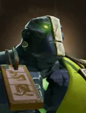
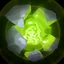

Not in the shop. One of the Pandaren spirits: the only way to get it is Pandaren fishing, when a Pandaren on your board brings it in at the start of a round.

Rolling Boulder
Active
Earth Spirit calls upon boulders from the surrounding to roll across the chessboard, striking and stunning all enemies in a row or column.
Killing blows immediately reset this ability.
| ★ | ★★ | ★★★ | |
|---|---|---|---|
| BOULDER NUMBER | 1 | 2 | 3 |
| STUN DURATION | 3 | 3 | 4 |
| PHYSICAL DAMAGE | 300 | 400 | 600 |
| Cooldown (s) | 6 | 5 | 4 |
| Mana cost | 75 | ||
It is with the power of a mountain that Earth Spirit strikes his enemies.
Stats
| ★ | ★★ | ★★★ | |
|---|---|---|---|
| Health | 900 | 1800 | 3600 |
| Mana | 100 | 100 | 100 |
| Armor | 9 | 9 | 9 |
| Magic resistance | 0% | 0% | 0% |
| Attack damage | 40–70 | 80–140 | 160–320 |
| Attack interval (s) | 1.5 | 1.5 | 1.5 |
| Attack range | 205 | 205 | 205 |
| Move speed | 500 | 500 | 500 |
 Pandaren · Hospitality
Pandaren · Hospitality
- (1) Each round, a chance to receive a random piece that shares a race with one of your board pieces. Pieces already on your board and pieces you already have at 3 stars are skipped. The chance starts at ~6.8%, rises after every miss and resets when you catch something.
- (2) Also, each Pandaren on your board has a 15% chance (same pity and luck multipliers) to bring a copy of itself.
 Shaman · Hex
Shaman · Hex
Shamans cast their skill with 75% of the normal mana.
- (3) After casting its skill or using an active item, a Shaman spends about 1.25s transforming into a random piece 2 levels higher (capped by your courier level and at 9). The new form has no items (your items are kept safe) and dies after 20-25 seconds.
- (6) The transformed piece keeps its items, but each one becomes a random item 2 tiers higher.